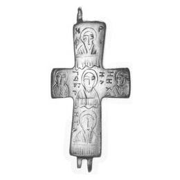

Catalog › CE-0021 · LOV1999-15
Valvă posterioară de encolpion cu busturi gravate și inscripții grecești
sec. X–XI (901–1100) · loc necunoscut · Muzeul Național Maghiar, Budapesta, inv. 61.95.B
single valve of a reliquary cross, bronz; c. X–XI (901–1100); find spot unknown; kept at Muzeul Național Maghiar, Budapesta.


Identificare
- Categorie
- Valvă izolată
- Material
- Bronz
- Tehnică
- Turnare în relief; Gravare (incizie)
- Dimensiuni
- Î 78 × L 41 mm
Iconografie
- Revers
- Sf. Arhanghel Mihail
- Descriere revers
- Pe brațul vertical, trei busturi gravate suprapuse, sub ele o draperie cu falduri verticale; la capetele brațelor orizontale, busturi asemănătoare, fără draperie.
- Inscripții
- ΜΡ ΘΥ (abreviere pentru „Născătoare de Dumnezeu”); ΓΑΒΡΗΙΛ; ΜΗΧΑΗΛ
- Limba
- Greacă
Datare și atribuire
- Datare
- sec. X–XI (901–1100)
- Centru
- Necunoscut
Descoperire
- Context
- Colecție (fără context)
- Coordonate
- 47.4913° N, 19.0626° E
- Precizia locului
- Loc de păstrare (loc de descoperire incert)
Păstrare și referințe
- Colecție
- Muzeul Național Maghiar, Budapesta
- Nr. inventar
- 61.95.B
- Bibliografie
- Zs. Lovag, Mittelalterliche Bronzegegenstände des Ungarischen Nationalmuseums (Catalogi Musei Nationalis Hungarici, Series Archaeologica III), Budapest, 1999, p. 25, cat. nr. 15, reprodusă la Abb. 15 (planșele, p. 131). Bibliografie citată în sursă: Lovag 1971, 152, Fig. 3/2.
- Figura
- Abb. 15
- Planșe
- Lovag 1999, planșele, p. 131
- Observații
- Datare după Lovag: sec. X–XI. X–XI. Origine provincial-bizantină, după sursă. Loc de descoperire necunoscut; din vechiul fond al muzeului. Sursa menționează o cruce asemănătoare din zona Varna (Bulgaria), cu cinci busturi gravate (în mijloc Hristos, sus Maria, jos Gavriil, pe laturi inscripțiile Mihail și Ioan), nepublicată, după comunicarea orală a L. Dončeva-Petkova. Locul descoperirii nu e cunoscut cu precizie; punctul de pe hartă marchează locul de păstrare (Muzeul Național Maghiar), nu locul descoperirii. Coordonate: nu sunt date în sursă.
Citare: Corpus Encolpiorum, CE-0021, Valvă posterioară de encolpion cu busturi gravate și inscripții grecești, --root/piese/LOV1999-15/ (accesat 2026-10-20).